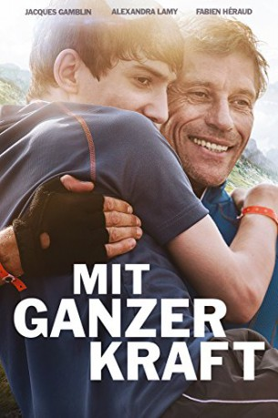

#3648 Mit ganzer Kraft
Alternativ: Mit ganzer Kraft - Hürden gibt es nur im Kopf (Englischer Titel)
 
 IMDB-Wertung: 6.6 / 10
IMDB-Wertung: 6.6 / 10  Metascore: 0
Metascore: 0 
Julien dreams of adventure. But when you live in a wheelchair, such dreams are difficult to fulfill. To do so, Julien challenges his father to compete with him in the "Ironman" triathlon in Nice. A whole family comes together and reconnects in an attempt to see this incredible exploit through.
Jahr: 2013
Dauer: 89 Minuten
FSK: 0
Land: Frankreich Studio: PolybandTonspuren:
Untertitel: Deutsch,
Auflösung: 1080p (1920x1040) Größe: 7505 MB
Genre: Drama, Sport
Regisseur: Nils Tavernier
Drehbuch: Albert Aley
Soundtrack:
Darsteller:
- Jacques Gamblin als Paul Amblard
 Alexandra Lamy als Claire Amblard
Alexandra Lamy als Claire Amblard- Géraldine Causse als
- Fabien Héraud als Julien Amblard
- Sophie de Fürst als Sophie Amblard
- Pablo Pauly als Yohan
- Xavier Mathieu als Sergio
- Christelle Cornil als Isabelle
- Fred Epaud als Docteur Pascal
- Sandra Leclercq als Lucie
- Lydia Guillermin als La jeune revendicatrice IMC
- Sonia Jacob als La kiné
- Laura Lardeux als Anne
- Yvette Petit als Mme Blanchard
- Hélène Gourdin Doherty als La barmaid
- Raphaël Boyes als Le pompiste
- Laurence Laouadi als L'éducatrice
- Nicolas Payan als L'hôte d'accueil Ironman
- Lionel Buisson als Le maître d'hôtel
- Brigitte Chambon als Le médecin de course
- Stéphane Garcia als Le présentateur course
- Frédéric Restagno als L'officiel course
- Sarah Langler als Jeune serveuse des 7 Laux
- Léo Dumorthier als Jeune pompier 20 ans
- Marine Thévenin als Katia
- Alexandre Ribeiro als Copain Julien
- Julien Menneson als Le coureur qui tombe
- Steeve Gasparin als Gendarme , uncredited
- Christophe Rossignon als Membre directoire Ironman , uncredited
Datei: X:\2013(I-M)\Mit ganzer Kraft (2013, FSK0, 1920x1040).mkv seit 12.05.2016
Festplatte: HD 2013(I-Z)-2014(A-Z)
 Es gibt insgesamt 89 Filme in der Gruppe '2013(I-M)'
Es gibt insgesamt 89 Filme in der Gruppe '2013(I-M)'